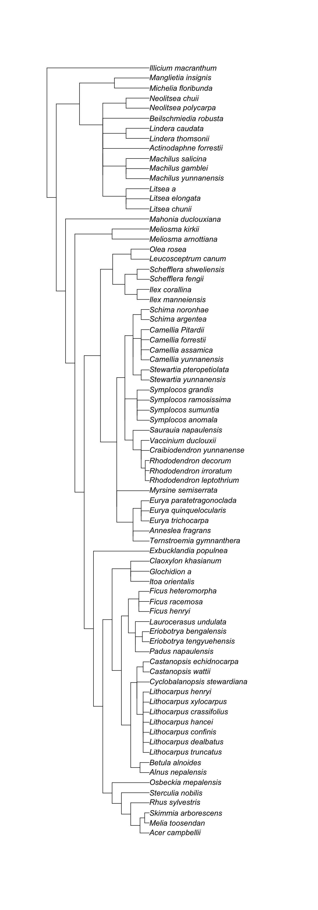
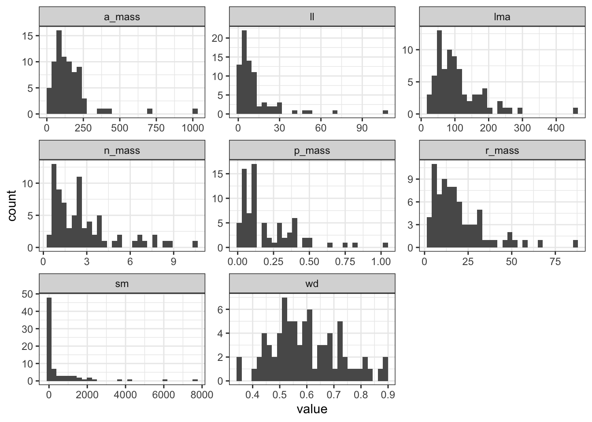
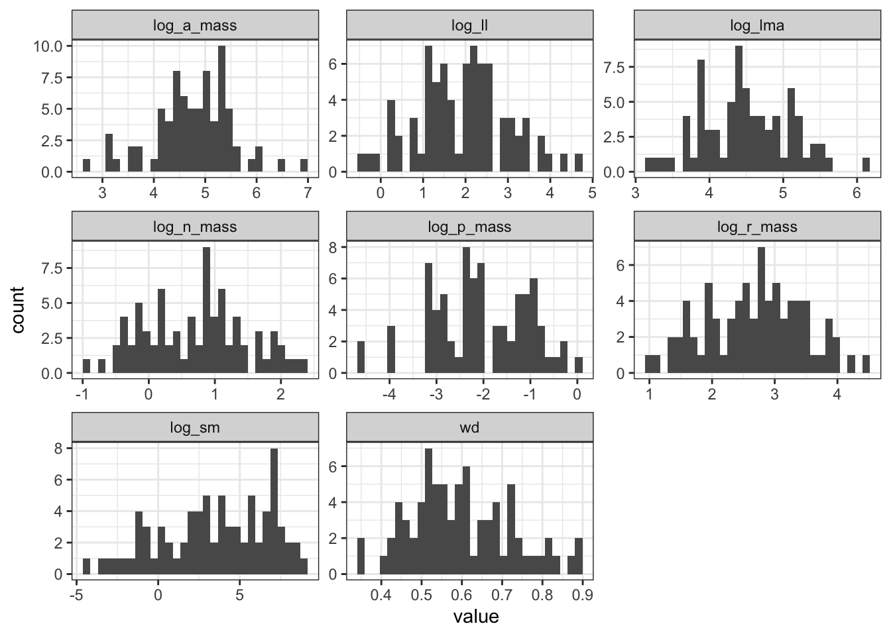
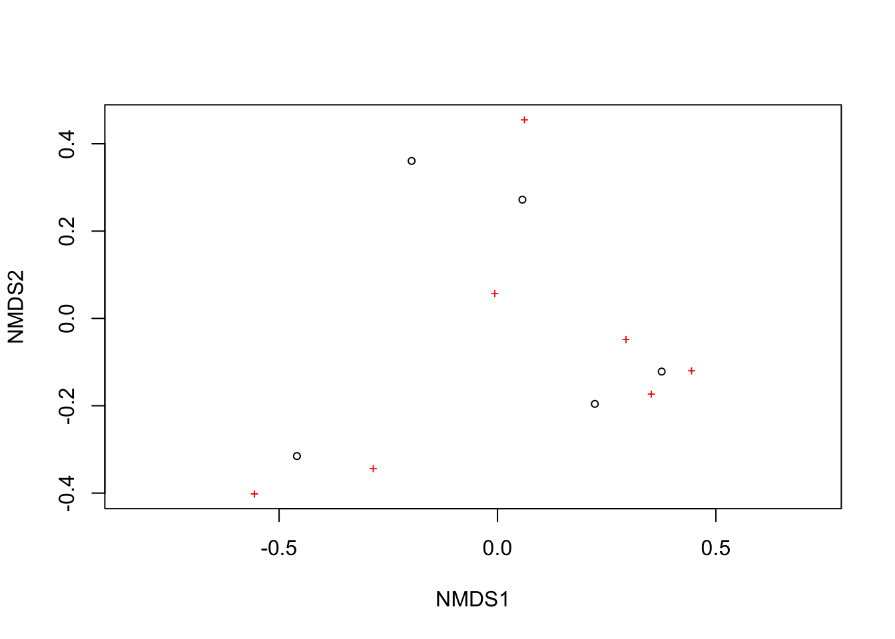
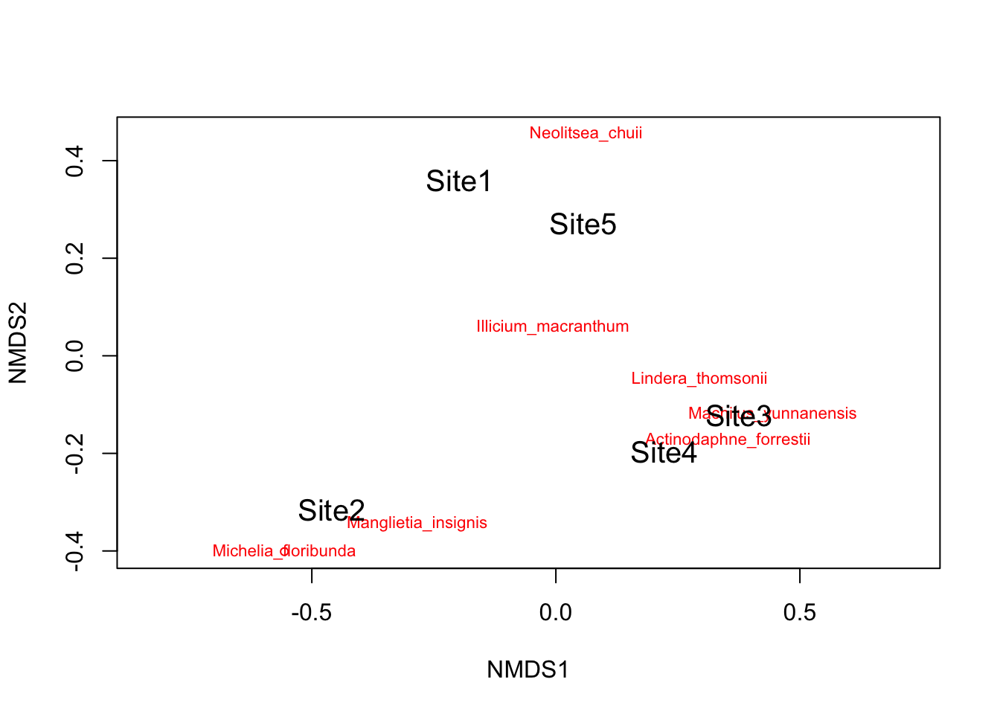
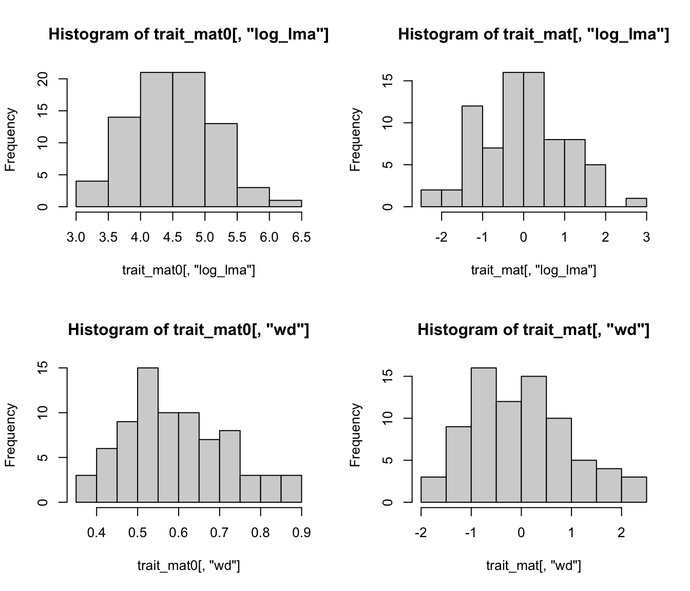
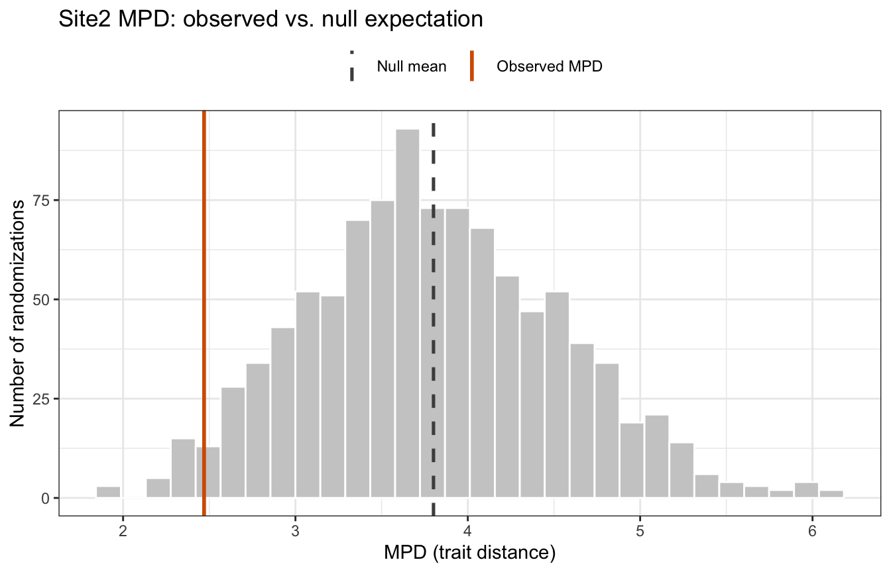
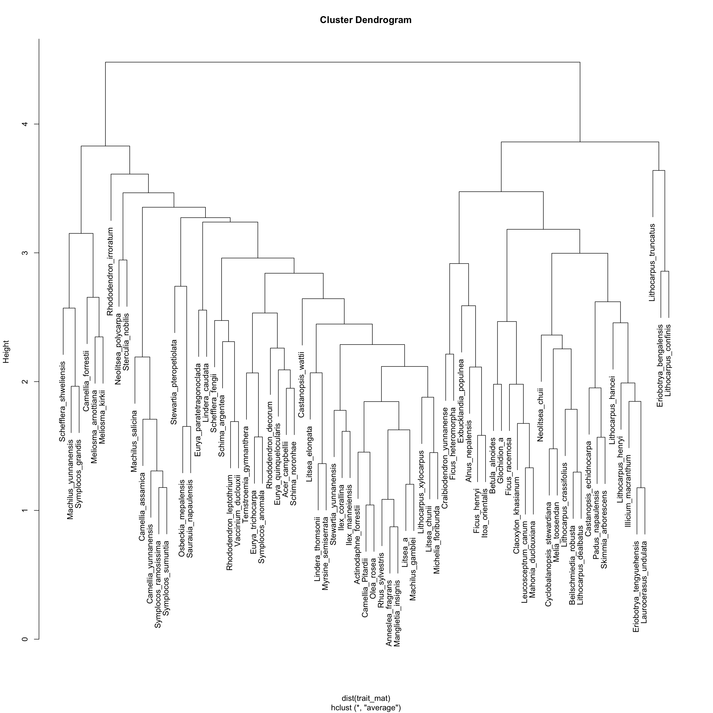

install.packages(c(
"tidyverse", "picante", "FD",
"DT", "here", "vegan", "ape"
))Diversity calculation
November 3–4, 2026
Course materials for AFEC 2026 at XTBG.
1 Objectives
- Prepare species \(\times\) site matrices and trait data from csv files.
- Calculate diversity indices.
2 Prerequisites
Download the exercise ZIP provided by the instructor and extract the entire folder. Move it somewhere you can save your work. Do not open files inside the ZIP.
Open
phy-fun-div.Rprojin RStudio, then opendiversity_example.qmd. Run the R code chunks in order using their green play buttons.Install the required packages once, before class if possible (internet required):
If diversity_example.html is included, you can open it in a browser to read the instructions and example results. Git and renv are not needed for the exercise ZIP. Rendering the whole notebook is optional; during class, run individual R chunks.
3 Load packages
library(tidyverse)
library(picante)
library(FD)4 Data
4.1 Community
First, we import the community data.
d <- read_csv("data/samp.csv")4.1.1 Using a relative path
- I prefer
read_csvbutread.csvis fine too. - Our working directory is
phy-fun-div, and the relative path tosamp.csvisdata/samp.csv.
The directory structure looks like this:
.
├── data/
│ ├── dummy_trait.csv
│ ├── dummy_tree.newick
│ └── samp.csv
├── docs/
└── phy-fun-div.Rproj4.1.2 Using here package
We can also use here package to specify the absolute path to the file. This is useful when you are working in a sub-directory. For example, you might be in docs/ directory, because your qmd file is there, but here will help you to find the correct absolute path to the data file.
# (For demonstration only — normally you shouldn't change working directories)
setwd("docs")
getwd()[1] "/Volumes/ThunderDrive/DataVault/Workspace/1-Projects/phy-fun-div/docs"read_csv("data/samp.csv")Error:
! 'data/samp.csv' does not exist in current working directory:
'/Volumes/ThunderDrive/DataVault/Workspace/1-Projects/phy-fun-div/docs'.here::here("data/samp.csv")[1] "/Volumes/ThunderDrive/DataVault/Workspace/1-Projects/phy-fun-div/data/samp.csv"d <- read_csv(here::here("data/samp.csv"))
setwd("..")4.1.3 Avoiding absolute paths
Avoid using absolute paths like this:
d <- read_csv("/Users/example/projects/phy-fun-div/data/samp.csv")Absolute paths are different on different computers (lack of reproducibility). It is also uncomfortable to make file system structure public (security risk).
4.1.4 Community data
Now let’s look at the community data.
d# A tibble: 40 × 3
Site Species abund
<chr> <chr> <dbl>
1 Site1 Illicium_macranthum 1
2 Site1 Manglietia_insignis 0
3 Site1 Michelia_floribunda 0
4 Site1 Beilschmiedia_robusta 0
5 Site1 Neolitsea_chuii 0
6 Site1 Lindera_thomsonii 0
7 Site1 Actinodaphne_forrestii 0
8 Site1 Machilus_yunnanensis 0
9 Site2 Illicium_macranthum 1
10 Site2 Manglietia_insignis 2
# ℹ 30 more rowsDT::datatable(d)Then, we want to make a species \(\times\) site matrix. tapply is a useful function here.
tapply(d$abund, d$Species, sum)Actinodaphne_forrestii Beilschmiedia_robusta Illicium_macranthum
4 2 5
Lindera_thomsonii Machilus_yunnanensis Manglietia_insignis
5 2 3
Michelia_floribunda Neolitsea_chuii
2 1 samp <- tapply(d$abund, list(d$Site, d$Species), sum)
samp Actinodaphne_forrestii Beilschmiedia_robusta Illicium_macranthum
Site1 0 0 1
Site2 0 2 1
Site3 2 0 1
Site4 2 0 1
Site5 0 0 1
Lindera_thomsonii Machilus_yunnanensis Manglietia_insignis
Site1 0 0 0
Site2 0 0 2
Site3 2 2 0
Site4 2 0 1
Site5 1 0 0
Michelia_floribunda Neolitsea_chuii
Site1 0 0
Site2 2 0
Site3 0 0
Site4 0 0
Site5 0 1class(samp)[1] "matrix" "array" 4.2 Phylogeny
phylo <- read.tree("data/dummy_tree.newick")
plot(phylo)
4.3 Traits
| Abbreviation | Trait | Unit |
|---|---|---|
| LMA | Leaf mass per area | g m-2 |
| LL | Leaf lifespans (longevity) | months |
| Amass | Maximum photosynthetic rates per unit mass | noml g-1 s-1 |
| Rmass | Dark respiration rates per unit mass | noml g-1 s-1 |
| Nmass | Leaf nitrogen per unit mass | % |
| Pmass | Leaf phosphorus per unit mass | % |
| WD | Wood density | g cm-3 |
| SM | Seed dry mass | mg |
trait <- read_csv("data/dummy_trait.csv")
DT::datatable(trait)4.4 Check how traits look like first
trait_long <- trait |>
pivot_longer(lma:sm, names_to = "trait")
trait_long# A tibble: 616 × 3
sp trait value
<chr> <chr> <dbl>
1 Acer_campbellii lma 95.5
2 Acer_campbellii ll 7.96
3 Acer_campbellii a_mass 169.
4 Acer_campbellii r_mass 41.2
5 Acer_campbellii n_mass 1.27
6 Acer_campbellii p_mass 0.1
7 Acer_campbellii wd 0.62
8 Acer_campbellii sm 13.6
9 Actinodaphne_forrestii lma 46.8
10 Actinodaphne_forrestii ll 2.41
# ℹ 606 more rowsggplot(trait_long, aes(x = value)) +
geom_histogram(position = "identity") +
facet_wrap(~ trait, scale = "free") +
theme_bw()
Probably we can do log-transformation for all the traits except for WD.
trait2 <- trait |>
mutate(
across(c(lma, ll, a_mass, r_mass, n_mass, p_mass, sm),
~ log(.),
.names = "log_{.col}")) |>
dplyr::select(sp, log_lma, log_ll, log_a_mass, log_r_mass, log_n_mass, log_p_mass, wd, log_sm)
trait2 |>
mutate(across(where(is.numeric), ~ round(., 2))) |>
DT::datatable()trait2 |>
pivot_longer(log_lma:log_sm, names_to = "trait") |>
ggplot(aes(x = value)) +
geom_histogram(position = "identity") +
facet_wrap(~ trait, scale = "free") +
theme_bw()
5 First-order metrics (without phylogeny or traits)
5.1 Species richness
samp > 0 Actinodaphne_forrestii Beilschmiedia_robusta Illicium_macranthum
Site1 FALSE FALSE TRUE
Site2 FALSE TRUE TRUE
Site3 TRUE FALSE TRUE
Site4 TRUE FALSE TRUE
Site5 FALSE FALSE TRUE
Lindera_thomsonii Machilus_yunnanensis Manglietia_insignis
Site1 FALSE FALSE FALSE
Site2 FALSE FALSE TRUE
Site3 TRUE TRUE FALSE
Site4 TRUE FALSE TRUE
Site5 TRUE FALSE FALSE
Michelia_floribunda Neolitsea_chuii
Site1 FALSE FALSE
Site2 TRUE FALSE
Site3 FALSE FALSE
Site4 FALSE FALSE
Site5 FALSE TRUEapply(samp > 0, 1, sum)Site1 Site2 Site3 Site4 Site5
1 4 4 4 3 5.2 Shannon
\(H' = - \sum_i^n p_i\mathrm{log}p_i\), where \(p_i\) is the relative abundance for species i.
shannon <- function(abund) {
p0 <- abund / sum(abund)
p <- p0[p0 > 0]
-sum(p * log(p))
}apply(samp, 1, shannon) Site1 Site2 Site3 Site4 Site5
0.000000 1.351784 1.351784 1.329661 1.098612 You don’t have to reinvent the wheel.
vegan::diversity(samp, index = "shannon") Site1 Site2 Site3 Site4 Site5
0.000000 1.351784 1.351784 1.329661 1.098612 5.3 Nonmetric Multidimensional Scaling (NMDS)
set.seed(123)
res_mds <- metaMDS(samp)Run 0 stress 0
Run 1 stress 0
... Procrustes: rmse 0.03766564 max resid 0.05427675
Run 2 stress 9.430908e-05
... Procrustes: rmse 0.1288563 max resid 0.1986301
Run 3 stress 0.2297529
Run 4 stress 0.1302441
Run 5 stress 0
... Procrustes: rmse 0.1011231 max resid 0.1787821
Run 6 stress 0
... Procrustes: rmse 0.07976277 max resid 0.1138996
Run 7 stress 0
... Procrustes: rmse 0.1001492 max resid 0.1321135
Run 8 stress 0.2597162
Run 9 stress 9.105109e-05
... Procrustes: rmse 0.1288642 max resid 0.1986327
Run 10 stress 9.743962e-05
... Procrustes: rmse 0.1288551 max resid 0.1986279
Run 11 stress 0.1302441
Run 12 stress 0
... Procrustes: rmse 0.06462134 max resid 0.1091833
Run 13 stress 0
... Procrustes: rmse 0.05524565 max resid 0.08273111
Run 14 stress 0
... Procrustes: rmse 0.04696261 max resid 0.0740693
Run 15 stress 0
... Procrustes: rmse 0.1108403 max resid 0.1927059
Run 16 stress 0.09681005
Run 17 stress 0.09680979
Run 18 stress 0
... Procrustes: rmse 0.1507753 max resid 0.2013288
Run 19 stress 0
... Procrustes: rmse 0.1190926 max resid 0.2087473
Run 20 stress 0
... Procrustes: rmse 0.1011312 max resid 0.1547788
*** Best solution was not repeated -- monoMDS stopping criteria:
14: stress < smin
3: stress ratio > sratmax
3: scale factor of the gradient < sfgrminplot(res_mds)
We can use the function ordiplot and orditorp to add text to the plot in place of points to make some more sense.
ordiplot(res_mds, type = "n")
orditorp(res_mds, display = "species", col = "red", air = 0.01)
orditorp(res_mds, display = "sites", cex = 1.25, air = 0.01)
6 Phylogenetic metrics
6.1 Branch length based metric
6.1.1 PD
res_pd <- pd(samp, phylo)
res_pd PD SR
Site1 1.000000 1
Site2 3.022727 4
Site3 2.909091 4
Site4 3.136364 4
Site5 2.454545 3You can always see the help.
?pd6.2 Distance based metric
cophenetic() creates distance matrices based on phylogenetic trees. Let’s see the first 5 species.
cophenetic(phylo)[1:5, 1:5] Acer_campbellii Melia_toosendan Skimmia_arborescens
Acer_campbellii 0.0000000 0.18181818 0.18181818
Melia_toosendan 0.1818182 0.00000000 0.09090909
Skimmia_arborescens 0.1818182 0.09090909 0.00000000
Rhus_sylvestris 0.3636364 0.36363636 0.36363636
Sterculia_nobilis 0.5454545 0.54545455 0.54545455
Rhus_sylvestris Sterculia_nobilis
Acer_campbellii 0.3636364 0.5454545
Melia_toosendan 0.3636364 0.5454545
Skimmia_arborescens 0.3636364 0.5454545
Rhus_sylvestris 0.0000000 0.5454545
Sterculia_nobilis 0.5454545 0.00000006.2.1 MPD
\(MPD = \frac{2}{n(n-1)} \sum_{i<j} \delta_{i,j}\), where \(n\) is the number of species in the community and \(\delta_{i,j}\) is the distance between species i and j. Each distinct species pair is counted once.
res_mpd <- mpd(samp, cophenetic(phylo))
res_mpd[1] NA 1.568182 1.454545 1.606061 1.636364The above vector shows MPD for each site.
6.2.2 MNTD
\(MNTD = \frac{1}{n} \Sigma^n_i min \delta_{i,j} \; i \neq j\), where \(min \delta_{i, j}\) is the minimum distance between species i and all other species in the community.
res_mntd <- mntd(samp, cophenetic(phylo))
res_mntd[1] NA 1.181818 1.181818 1.295455 1.2727277 Functional metrics
7.1 Community weighted means (CWM)
\[ \mathrm{CWM}_i = \frac{\sum_{j=1}^n a_{ij} \times t_{j}}{\sum_{j=1}^n a_{ij}} \]
or
\[ \mathrm{CWM}_i = \frac{\boldsymbol{a_i} \cdot \boldsymbol{t}}{\sum_{j=1}^n a_{ij}}, \]
where \(a_{ij}\) is the abundance of species j in community i, and \(t_{j}\) is a trait value of species j.
stopifnot(!anyDuplicated(trait$sp), all(colnames(samp) %in% trait$sp))
tmp <- trait[match(colnames(samp), trait$sp), ]
stopifnot(identical(tmp$sp, colnames(samp)))
tmp# A tibble: 8 × 9
sp lma ll a_mass r_mass n_mass p_mass wd sm
<chr> <dbl> <dbl> <dbl> <dbl> <dbl> <dbl> <dbl> <dbl>
1 Actinodaphne_forrestii 46.8 2.41 219. 26.5 3.5 0.29 0.58 1130.
2 Beilschmiedia_robusta 107. 8.13 156. 11.2 2.4 0.04 0.6 2151.
3 Illicium_macranthum 110. 12.8 80.0 9.96 0.97 0.06 0.53 58.5
4 Lindera_thomsonii 93.3 3.65 127. 10.1 1.27 0.05 0.66 94.2
5 Machilus_yunnanensis 29.5 2.95 143. 36.7 6.71 0.4 0.79 1200
6 Manglietia_insignis 74.1 3.51 108. 15.6 2.85 0.11 0.53 36.3
7 Michelia_floribunda 58.9 7.98 92.5 33.0 3.13 0.26 0.74 65.0
8 Neolitsea_chuii 148. 9.61 228. 4.51 2.85 0.09 0.78 125. (ab <- apply(samp, 1, sum))Site1 Site2 Site3 Site4 Site5
1 7 7 6 3 # %*% denotes inner product
(cws <- samp %*% as.matrix(tmp[, -1])) lma ll a_mass r_mass n_mass p_mass wd sm
Site1 109.65 12.81 79.98 9.96 0.97 0.06 0.53 58.544
Site2 589.97 52.05 792.38 129.58 17.73 0.88 4.27 4563.742
Site3 448.87 30.83 1058.20 156.36 23.93 1.54 4.59 4905.880
Site4 463.98 28.44 880.48 98.66 13.36 0.85 3.54 2542.225
Site5 350.89 26.07 434.39 24.55 5.09 0.20 1.97 278.152(cwm <- cws / ab) lma ll a_mass r_mass n_mass p_mass wd
Site1 109.65000 12.810000 79.9800 9.960000 0.970000 0.06000000 0.5300000
Site2 84.28143 7.435714 113.1971 18.511429 2.532857 0.12571429 0.6100000
Site3 64.12429 4.404286 151.1714 22.337143 3.418571 0.22000000 0.6557143
Site4 77.33000 4.740000 146.7467 16.443333 2.226667 0.14166667 0.5900000
Site5 116.96333 8.690000 144.7967 8.183333 1.696667 0.06666667 0.6566667
sm
Site1 58.54400
Site2 651.96314
Site3 700.84000
Site4 423.70417
Site5 92.71733The site \(\times\) species matrix and species \(\times\) trait matrix produce a site \(\times\) trait matrix. CWM uses raw trait values, so the results retain their original units. For trait distances below, all traits except WD are log-transformed, and all traits are standardized.
7.2 Distance based metrics
7.2.1 Prepare a trait distance matrix
We have a data.fame or tibble object of traits. First, we need to prepare a trait matrix, then a distance matrix based on trait values.
trait_mat0 <- as.matrix(trait2[, -1])
rownames(trait_mat0) <- trait2$spLet’s see a subset of the trait matrix
trait_mat0[1:5, 1:5] log_lma log_ll log_a_mass log_r_mass log_n_mass
Acer_campbellii 4.559126 2.0744290 5.130313 3.717467 0.2390169
Actinodaphne_forrestii 3.845242 0.8796267 5.390851 3.275634 1.2527630
Alnus_nepalensis 5.457114 3.9373008 3.709172 1.994700 -0.2231436
Anneslea_fragrans 4.443945 1.4011830 4.769752 3.334345 0.9707789
Beilschmiedia_robusta 4.674230 2.0955609 5.047417 2.415914 0.8754687Then, we will make a trait distance matrix based on the Euclidean distance. There are other distance measures, for example Gower’s Distance, but we focus on the Euclidean distance today.
Before calculating distance, we need to make sure the unit change in distances is the same for different traits. We will scale trait values so that they have mean = 0 and SD = 1. (e.g., \((X_i - \mu) / \sigma\))
# (trait_mat0 - mean(trait_mat0)) / sd(trait_mat0)
trait_mat <- scale(trait_mat0)
par(mfrow = c(2, 2))
hist(trait_mat0[, "log_lma"])
hist(trait_mat[, "log_lma"])
hist(trait_mat0[, "wd"])
hist(trait_mat[, "wd"])
par(mfrow = c(1, 1))Now we can make a trait distance matrix.
trait_dm <- as.matrix(dist(trait_mat))Let’s see the first 5 species.
trait_dm[1:5, 1:5] Acer_campbellii Actinodaphne_forrestii Alnus_nepalensis
Acer_campbellii 0.000000 2.782464 3.984316
Actinodaphne_forrestii 2.782464 0.000000 5.827815
Alnus_nepalensis 3.984316 5.827815 0.000000
Anneslea_fragrans 1.700990 2.137686 4.235825
Beilschmiedia_robusta 2.575820 2.933286 4.257944
Anneslea_fragrans Beilschmiedia_robusta
Acer_campbellii 1.700990 2.575820
Actinodaphne_forrestii 2.137686 2.933286
Alnus_nepalensis 4.235825 4.257944
Anneslea_fragrans 0.000000 2.136335
Beilschmiedia_robusta 2.136335 0.0000007.2.2 MPD (Mean Pairwise Distance)
mpd(samp, trait_dm)[1] NA 2.469892 3.289818 2.420470 2.374736set.seed(123)
res_ses_mpd <- ses.mpd(samp, trait_dm, null.model = "taxa.labels", runs = 999)
res_ses_mpd ntaxa mpd.obs mpd.rand.mean mpd.rand.sd mpd.obs.rank mpd.obs.z
Site1 1 NA NaN NA NA NA
Site2 4 2.469892 3.800987 0.7334004 27 -1.8149630
Site3 4 3.289818 3.789675 0.7080368 241 -0.7059762
Site4 4 2.420470 3.812291 0.6881072 18 -2.0226806
Site5 3 2.374736 3.829053 0.8916243 34 -1.6310878
mpd.obs.p runs
Site1 NA 999
Site2 0.027 999
Site3 0.241 999
Site4 0.018 999
Site5 0.034 999Standardized effect size (SES)
How different is the observed MPD from a random expectation? Here, the null model shuffles species labels in the trait distance matrix, using all 77 species with trait data as the species pool. The community matrix stays unchanged, so each site’s species richness is preserved.
Let’s compare the observed MPD of Site2 with 999 randomized values. We use the same seed and label shuffles as above to reproduce its null distribution.
site <- "Site2"
observed_mpd <- res_ses_mpd[site, "mpd.obs"]
set.seed(123)
null_mpd <- replicate(999, {
shuffled_dm <- taxaShuffle(trait_dm)
mpd(samp[site, , drop = FALSE], shuffled_dm)
})ggplot(tibble(MPD = null_mpd), aes(x = MPD)) +
geom_histogram(bins = 30, fill = "grey80", color = "white") +
geom_vline(aes(xintercept = mean(null_mpd), color = "Null mean"),
linetype = "dashed", linewidth = 0.9) +
geom_vline(aes(xintercept = observed_mpd, color = "Observed MPD"),
linewidth = 1) +
scale_color_manual(values = c("Null mean" = "grey30", "Observed MPD" = "#D55E00")) +
labs(title = paste(site, "MPD: observed vs. null expectation"),
x = "MPD (trait distance)", y = "Number of randomizations", color = NULL) +
theme_bw() +
theme(legend.position = "top")
SES expresses the difference between the observation and the null mean in units of the null standard deviation:
\[ SES = \frac{MPD_{obs} - \overline{MPD}_{null}}{SD(MPD_{null})} \]
(observed_mpd - mean(null_mpd)) / sd(null_mpd)[1] -1.814963res_ses_mpd[site, "mpd.obs.z"][1] -1.814963These two values are the same. A negative SES means smaller trait distances than expected (clustering); a positive SES means larger distances (overdispersion). SES does not require a normal null distribution, and its sign alone does not establish statistical significance or identify an ecological process.
7.2.3 MNTD (Mean Nearest Taxon Distance)
mntd(samp, trait_dm)[1] NA 2.086180 1.959894 1.843332 1.935270set.seed(123)
ses.mntd(samp, trait_dm) ntaxa mntd.obs mntd.rand.mean mntd.rand.sd mntd.obs.rank mntd.obs.z
Site1 1 NA NaN NA NA NA
Site2 4 2.086180 2.928206 0.5739054 68 -1.467186
Site3 4 1.959894 2.907872 0.5486965 32 -1.727691
Site4 4 1.843332 2.912568 0.5244399 15 -2.038814
Site5 3 1.935270 3.203060 0.7427887 32 -1.706797
mntd.obs.p runs
Site1 NA 999
Site2 0.068 999
Site3 0.032 999
Site4 0.015 999
Site5 0.032 9997.3 Branch length based metric
7.3.1 FD
We will make a functional dendrogram using clustering methods. We use UPGMA in this example.
t_clust <- hclust(dist(trait_mat), method = "average")
plot(t_clust)
7.3.2 More functional diversity metrics
res_fd <- dbFD(trait_mat[colnames(samp), ], samp)FEVe: Could not be calculated for communities with <3 functionally singular species.
FDis: Equals 0 in communities with only one functionally singular species.
FRic: To respect s > t, FRic could not be calculated for communities with <3 functionally singular species.
FRic: Dimensionality reduction was required. The last 5 PCoA axes (out of 7 in total) were removed.
FRic: Quality of the reduced-space representation = 0.735155
FDiv: Could not be calculated for communities with <3 functionally singular species. res_fd$nbsp
Site1 Site2 Site3 Site4 Site5
1 4 4 4 3
$sing.sp
Site1 Site2 Site3 Site4 Site5
1 4 4 4 3
$FRic
Site1 Site2 Site3 Site4 Site5
NA 4.468442 3.940963 3.687456 1.708161
$qual.FRic
[1] 0.735155
$FEve
Site1 Site2 Site3 Site4 Site5
NA 0.8707901 0.8968966 0.8971084 0.9160522
$FDiv
Site1 Site2 Site3 Site4 Site5
NA 0.8126651 0.7448396 0.6678354 0.7143847
$FDis
Site1 Site2 Site3 Site4 Site5
0.000000 2.087301 2.610339 2.144460 1.959423
$RaoQ
Site1 Site2 Site3 Site4 Site5
0.000000 4.458103 7.224290 5.024664 4.019137
$CWM
log_lma log_ll log_a_mass log_r_mass log_n_mass log_p_mass
Site1 0.3344360 0.579823915 -0.50203293 -0.48476067 -0.96138260 -0.7486587
Site2 -0.1568008 -0.007224714 -0.08474707 0.15747748 0.20687956 -0.2834198
Site3 -0.7680158 -0.580906528 0.26725494 0.34931981 0.32964419 0.1696284
Site4 -0.3341308 -0.521332044 0.20731316 0.03063323 -0.05786536 -0.1963481
Site5 0.4108403 0.104367800 0.15752128 -0.81602663 -0.37939998 -0.6760031
wd log_sm
Site1 -0.54709198 0.1696834
Site2 0.09239314 0.4480516
Site3 0.45781321 0.7258077
Site4 -0.06747814 0.4909752
Site5 0.46542613 0.2940465